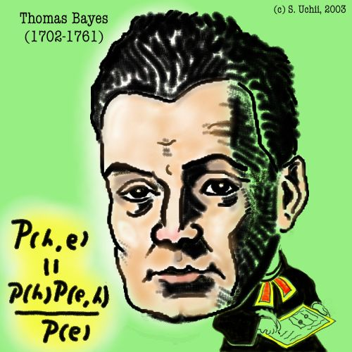

Research Overview
My research revolves around data science -- a fascinating field filled with challenging questions. Particularly, I focus on the following areas:
learning techniques for Big Data
The explosive growth of data has presented great challenges
-- traditional machine learning techniques that were mostly
developed over closed datasets of moderate size are difficult
to meet the increasing computational demand of handling large
scale and dynamically changing data. New techniques, especially
those that leverage the latest advancement in nonparametric
analysis, stochastic optimization, and parallel computing,
are needed to address these challenges.
Deep Understanding of Image + Text
Visual scenes are diverse and complex.
Despite significant progress in scene understanding, current
approaches are still quite limited -- most of them can only handle
scenes with certain structures. The sheer amount of images
available on the internet provides a great opportunity to move
beyond such limits. I am interested in pushing forward the state of
the art, by leveraging the web-scale data, discovering the relations
between images and natural language descriptions, as well as the latest
advancement of deep learning techniques.

Nonparametric models provide a flexible framework to describe complex
data and those that may evolve over time. Despite their theoretical
advantages, application of nonparametric models in large-scale
analysis are still impeded by lack of efficient estimation methods and
the means to capture complex relations. My work in this domain mainly
aims at tackling these difficulties and thus expanding the application
boundary of nonparametric analysis.